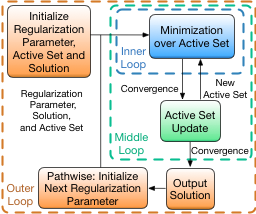
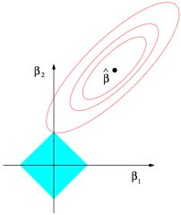
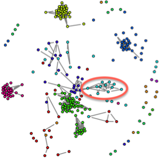

Xingguo Li — Software
R Packages
Picasso: Pathwise Calibrated Sparse Shooting Algorithm [download][vignette] [github]
Xingguo Li*, Jian Ge*, Mengdi Wang, Tong Zhang, Han Liu, and Tuo Zhao
|  | Description: Computationally efficient tools for fitting generalized linear model with convex or non-convex penalty. Users can enjoy the superior statistical property of non-convex penalty such as SCAD and MCP which has significantly less estimation error and overfitting compared to convex penalty such as lasso and ridge. Computation is handled by multi-stage convex relaxation and the PathwIse CAlibrated Sparse Shooting algOrithm (PICASSO) which exploits warm start initialization, active set updating, and strong rule for coordinate preselection to boost computation, and attains a linear convergence to a unique sparse local optimum with optimal statistical properties. The computation is memory-optimized using the sparse matrix output. |
Flare: Family of Lasso Regression [download]
Xingguo Li, Tuo Zhao, Lie Wang, Xiaoming Yuan, and Han Liu
|  | Description: Provide the implementation of a family of Lasso variants including Dantzig Selector, LAD Lasso, SQRT Lasso, Lq Lasso for estimating high dimensional sparse linear model. We adopt the alternating direction method of multipliers and convert the original optimization problem into a sequential L1 penalized least square minimization problem, which can be efficiently solved by linearization algorithm. A multi-stage screening approach is adopted for further acceleration. Besides the sparse linear model estimation, we also provide the extension of these Lasso variants to sparse Gaussian graphical model estimation including TIGER and CLIME using either L1 or adaptive penalty. Missing values can be tolerated for Dantzig selector and CLIME. The computation is memory-optimized using the sparse matrix output. |
Huge: High-dimensional Undirected Graph Estimation [download]
Tuo Zhao, Xingguo Li, Han Liu, Kathryn Roeder, John Lafferty, and Larry Wasserman
|  | Description: Provide a general framework for high-dimensional undirected graph estimation. It integrates data preprocessing, neighborhood screening, graph estimation, and model selection techniques into a pipeline. In preprocessing stage, the nonparanormal(npn) transformation is applied to help relax the normality assumption. In the graph estimation stage, the graph structure is estimated by Meinshausen-Buhlmann graph estimation or the graphical lasso, and both methods can be further accelerated by the lossy screening rule preselecting the neighborhood of each variable by correlation thresholding. We target on high-dimensional data analysis usually d >> n, and the computation is memory-optimized using the sparse matrix output. We also provide a computationally efficient approach, correlation thresholding graph estimation. Three regularization/thresholding parameter selection methods are included in this package: (1)stability approach for regularization selection (2) rotation information criterion (3) extended Bayesian information criterion which is only available for the graphical lasso. |
Camel: Calibrated Machine Learning [download]
Xingguo Li, Tuo Zhao, and Han Liu
Description: Provide the implementation of a family of high-dimensional calibrated machine learning tools, including (1) LAD, SQRT Lasso and Calibrated Dantzig Selector for estimating sparse linear models; (2) Calibrated Multivariate Regression for estimating sparse multivariate linear models; (3) Tiger, Calibrated Clime for estimating sparse Gaussian graphical models. We adopt the combination of the dual smoothing and monotone fast iterative soft-thresholding algorithm (MFISTA). The computation is memory-optimized using the sparse matrix output, and accelerated by the path following and active set tricks.
SAM: Sparse Additive Modeling [download]
Tuo Zhao, Xingguo Li, Han Liu, and Kathryn Roeder
Description: Target at high dimensional predictive modeling (regression and classification) for complex data analysis. SAM is short for sparse additive modeling, and adopts the computationally efficient basis spline technique. We solve the optimization problems by various computational algorithms including the block coordinate descent algorithm, fast iterative soft-thresholding algorithm, and newton method. The computation is further accelerated by warm-start and active-set tricks.